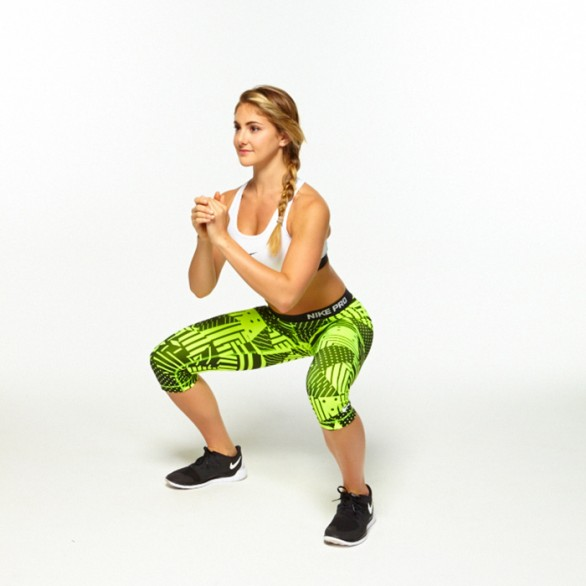
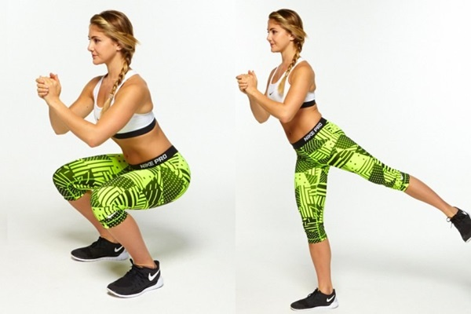
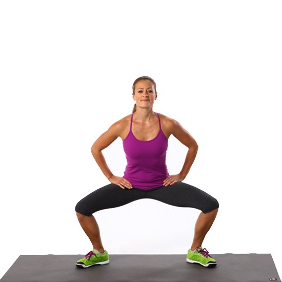
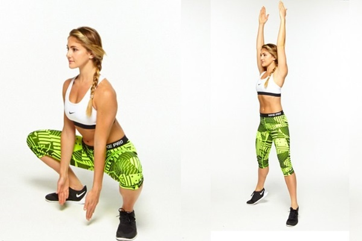

Tập Squat cơ bản
+Bạn bắt đầu bài tập với tư thế hai chân mở rộng bằng vai, đứng thẳng, hai tay đan lại với nhau để trước ngực, bụng hóp lại và vai mở rộng;
+Kế đến, bạn đẩy hông và mông ra phía sau hết sức có thể, từ từ hạ thấp cơ thể xuống cho đến khi phần đùi song song với sàn nhà. Cùng lúc đó, bạn cố gắng để đầu gối của mình và bàn chân hướng ra ngoài. Hai tay vẫn giữ nguyên. Cổ, vai và mông tạo thành một đường xiên, mắt nhìn lên, ngực thẳng và hóp bụng;
+Sau đó, bạn giữ nguyên 2 giây và trở về vị trí ban đầu.
Squat đúng tư thế khi đá chân sau
+Squat đá chân sau tương tự như squat cơ bản, chỉ khác là khi bạn đứng lên, hãy đá chân trái ra phía sau hết sức có thể và giữ hông vuông góc;
+Kế đến, bạn thực hiện lại squat cơ bản và làm tương tự cho chân phải;
+Khi thực hiện động tác này, bạn hãy giữ cân bằng cơ thể, không đổ người về phía trước quá nhiều nhé
Squat tư thế sumo
Squat tư thế sumo khá giống với squat cơ bản nhưng yêu cầu cao hơn một chút ở chỗ bạn vào tư thế với phần chân và đầu gối mở rộng sang hai bên nhiều hơn, đồng thời lúc hạ thấp người, bạn giữ phần cơ mông xuống càng sâu càng tốt.Bài tập này sẽ giúp bạn có phần thân trên và vùng mông thêm nở nang hơn đấy.
Squat nhón gót kết hợp hai tay chạm đất
+Bạn vào tư thế hai chân dang rộng như tư thế sumo;
+Khi hạ thấp người xuống, bạn kết hợp với hai tay duỗi thẳng chạm đất;
+Khi nâng người, bạn đẩy mạnh người lên phía trên đồng thời nhón chân và đánh hai tay lên cao.
Động tác này giúp bạn bổ trợ sức khỏe cho toàn cơ thể và ổn định nhịp tim hiệu quả.